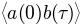
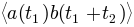
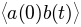
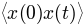
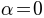
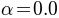
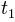

Here we demonstrate how to calculate two-time correlation functions in QuTiP. Using the quantum regression theorem, we can apply the equation of motion for the system itself also to calculate two-time correlation functions. In QuTiP, there are family functions that assists in this process: qutip.correlation.correlation_ode, qutip.correlation.correlation_es, qutip.correlation.correlation_mc, and qutip.correlation.correlation_ss_ode, qutip.correlation.correlation_ss_es, qutip.correlation.correlation_ss_mc. As the names suggest, these functions use the ODE, the exponential series, and the Monte-Carlo solvers, respectively, to evolve the correlation functions in time. The following table describes in detail the usage of each function:
| Function | Usage |
|---|---|
| qutip.correlation.correlation_ss_es | Calculates the steady state correlation , using the Exponential series solver. |
| qutip.correlation.correlation_ss_ode | Calculates the steady state correlation , using the ODE solver. |
| qutip.correlation.correlation_ss_mc | Calculates the steady state correlation , using the Monte-Carlo evolution. |
| qutip.correlation.correlation_es | Calculates the correlation function , using the Exponential series solver. |
| qutip.correlation.correlation_ode | Calculates the correlation function , using the ODE solver. |
| qutip.correlation.correlation_mc | Calculates the correlation function , using Monte-Carlo evolution. |
The most common use-case is to calculate correlation functions of the kind , in which case we use the correlation function solvers that start from the steady state, e.g., the qutip.correlation.correlation_ss_ode function. These functions return a vector (in general complex) with the correlations between the operators as a function of the difference time.
The following code demonstrates how to calculate the  correlation for a leaky cavity with three different relaxation rates:
>>> tlist = linspace(0,10.0,200);
>>> a = destroy(10)
>>> x = a.dag() + a
>>> H = a.dag()*a
>>>
>>> corr1 = correlation_ss_ode(H, tlist, [sqrt(0.5)*a], x, x)
>>> corr2 = correlation_ss_ode(H, tlist, [sqrt(1.0)*a], x, x)
>>> corr3 = correlation_ss_ode(H, tlist, [sqrt(2.0)*a], x, x)
>>>
>>> from pylab import *
>>> plot(tlist, real(corr1), tlist, real(corr2), tlist, real(corr3))
>>> xlabel('Time')
>>> ylabel('Correlation <x(0)x(t)>')
More generally, we can also calculate correlation functions of the kind , i.e., the correlation function of a system that is not in its steadystate. In QuTiP, we can evoluate such correlation functions using, e.g., the function qutip.correlation.correlation_ode. This function returns a matrix with the correlations as a function of the two time coordinates:
>>> tlist = linspace(0,10.0,200);
>>> a = destroy(10)
>>> x = a.dag() + a
>>> H = a.dag()*a
>>> alpha = 2.5
>>> corr = correlation_ode(H, coherent_dm(10, alpha), tlist, tlist, [sqrt(0.25)*a], x, x)
>>>
>>> from pylab import *
>>> pcolor(corr)
>>> xlabel('Time t2')
>>> ylabel('Time t1')
>>> title('Correlation <x(t1)x(t1+t2)>')
>>> show()

Notice that in the figure above to the right, where  and the system therefore initially is in its steadystate, that the correlations does not depend on the  coordinate, and we could in this case have used the steadystate solver to only calculate the dependence.